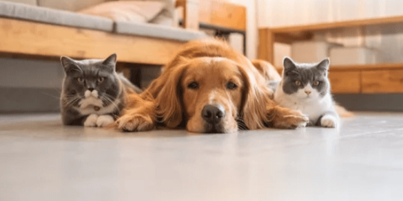

Northland Animal Welfare Society
Our Mission
The Northland Animal Welfare Society, Inc. ("NAWS") is a nonprofit 501(c)(3) organization that serves as a coalition for Clay and Platte counties dedicated to educating citizens regarding the humane treatment of animals. NAWS works to create awareness, regarding the need to reduce the number of homeless animals and to build a care and adoption campus so that every animal may live in a safe and caring environment.
About NAWS
The Northland Animal Welfare Society opened the NAWS Low-Cost Spay/Neuter Clinic on February 25, 2012, making it the first-ever spay and neuter clinic in Northland.
We believe that by offering education and low-cost spay/neuter services to the higher-risk, low-income pet owners in the Northland, we can reduce the number of litters born and the number of animals brought into shelters and rescue groups throughout the area. Our target populations are low-income residents who receive some type of government assistance or people who are not receiving assistance and are working but only earn less than $30,000 a year.
We are not a full-service clinic and only provide the following services for dogs and cats: spay, neuter, vaccinations, microchip, nail trim, heartworm test, feline FIV/Leukemia test, De-worming, tapeworm, and capstar (24-hour flea treatment).
Additionally, we also assist clients (who do not have to meet income guidelines) in reducing the free-roaming cat population in their neighborhood through the Trap-Neuter-Return (TNR) Program. Plus, we offer services to area rescue groups at a reduced cost. Rescue group animals are altered and vetted prior to being adopted out, thus preventing unplanned litters, which would most likely end up in the already overcrowded city shelters.
Some businesses and people in the community regularly donate food and pet-related items. This has afforded us the opportunity to have an onsite Food Pantry to assist our customers and rescue groups, as well as a Pet Boutique of gently used and new items for NAWS customers.
Services
- ► Spay and Neuter
- ► Grooming
- ► Micro-chipping
- ► TNR
- ► Training
- ► Pet products
Forms for visit
Please complete the proper forms and bring with you to visit or email us at naws@pcnaws.org.
Support NAWS
Find out ways you can help.
Visit our partners
Support Spay/Neuter Programs in Missouri with an “I'm Pet Friendly” License Plate!
We have an upstairs area available for parties, painting classes, meetings, etc. Please call 816-336-1888 for more details about the space available.
Hours of Operation
Monday - Friday
7:30 am - 4 pm
Saturday & Sunday
10 am - 2 pm
Pet Food Pantry Pickup
(Closed on Holidays)
Monday to Friday
1:00 pm to 3:30 pm
Saturday
11:30 am to 1:30 pm
Contact Us
If you have any questions or would like a schedule an appointment, please give us a call
Call Clinic to schedule appointment for all service.
Call for qualifying prices.
Office - 816-336-1888
Fax - 816-336-1886